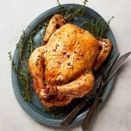

Chicken

Ingredients
2 tablespoons peanut oil, divided
1 shallot, finely chopped
Steps
Heat 1 tablespoon oil in a large saucepan over medium-high heat. Sauté shallot and onion until soft and translucent, about 5 minutes.